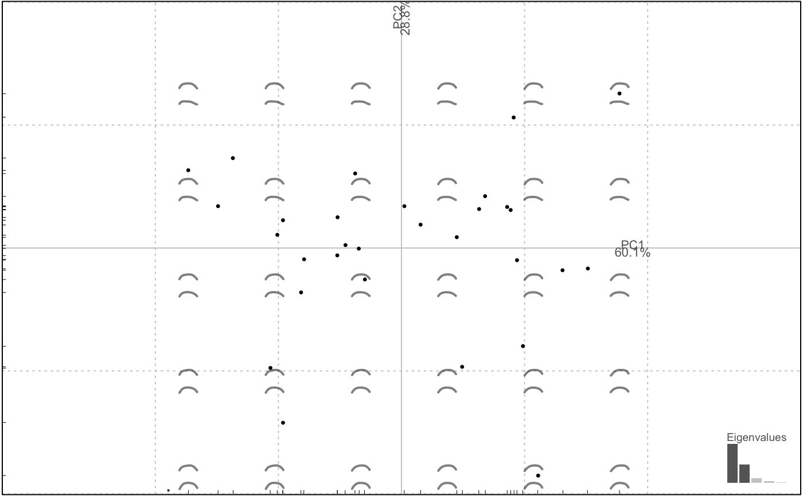

Rougher slicing that accepts a classifier
ie a column name from the $fac on Momocs classes.
Returns a named (after every level) list that can be lapply-ed and combined. See examples.
chop(.data, fac)
| .data | a |
|---|---|
| fac | a column name from the |
a named list of Coo or Coe objects
Other handling functions:
arrange(),
at_least(),
combine(),
dissolve(),
fac_dispatcher(),
filter(),
mutate(),
rename(),
rescale(),
rm_harm(),
rm_missing(),
rm_uncomplete(),
rw_fac(),
sample_frac(),
sample_n(),
select(),
slice(),
subsetize()
olea %>% filter(var == "Aglan") %>% # to have a balanced nb of 'view' chop(~view) %>% # split into a list of 2 npoly %>% # separately apply npoly # strict equivalent to lapply(npoly) combine %>% # recombine PCA %>% plot # an illustration of the 2 views#>#>#>#>#># treated separately